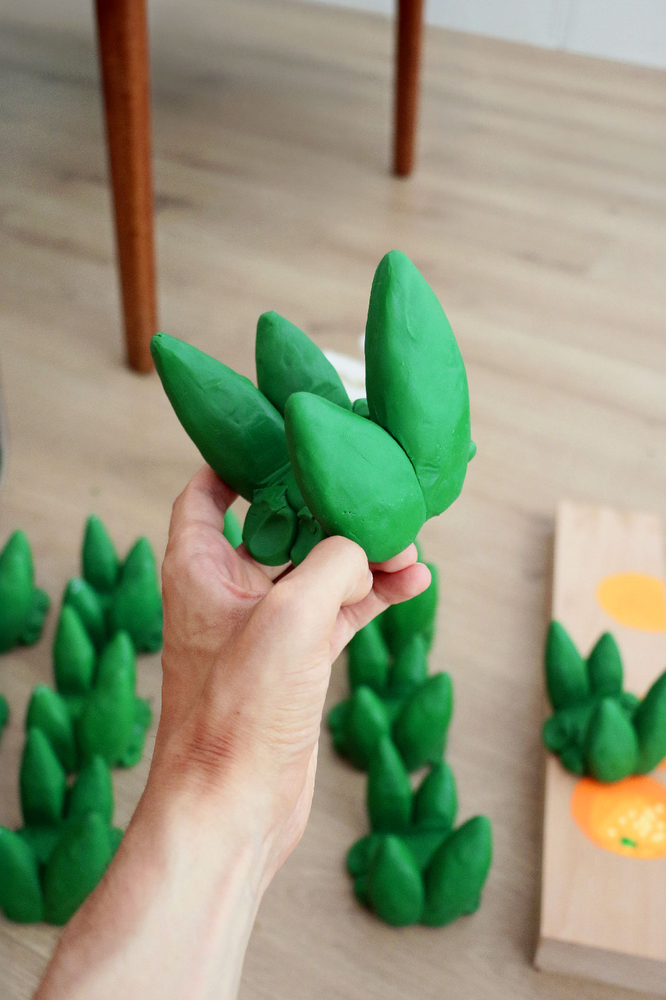
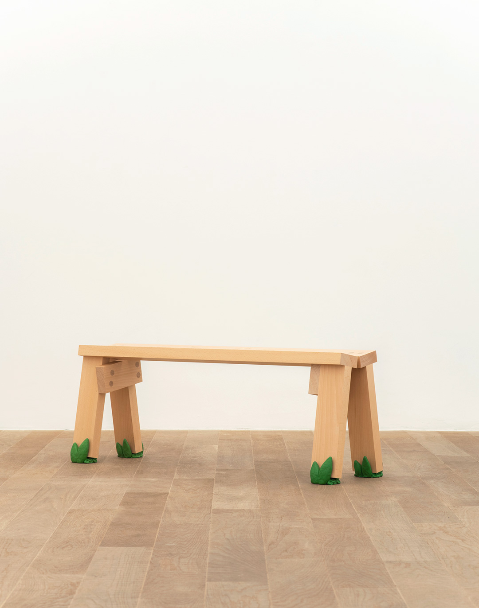
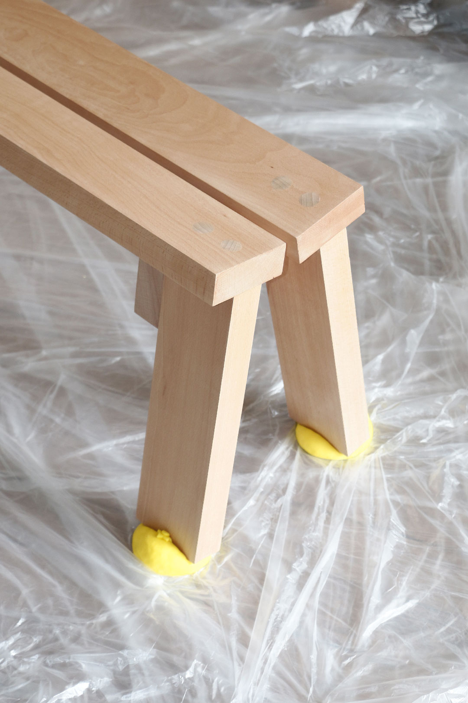

index | shop | info | contact | chaos
The Mandarina Bench and Grass Bench follow the simple logic of "Floor is Lava." Made from a single beech beam and assembled with minimal intervention, their construction emphasizes a straightforward, almost naïve gesture.
At each point of contact with the floor, the Mandarina Bench appears to press down on mandarin-shaped polyurethane forms, like small Play-Doh sculptures made by a very unlucky child.
Meanwhile, the Grass Bench, created as part of the Gardouch↗ SS25 Collection Showroom, "Gardouch: Jouer à faire semblant," at Galerie Sultana↗, resembles a clumsy scale model set on plastic grass.
Grass Bench, Floor is Lava Gardouch: Jouer à faire semblant Galerie Sultana↗ (Paris, 2025) | Beech wood, polyurethane | 42. 120. 33cm | img01 and img03 by Benoit Auguste↗ (3 available via shop)


Mandarina Bench, Floor is Lava (2024) | Beech wood, polyurethane | 42. 120. 33cm (1 available via shop)


*This website was last updated on July 1, 2026.